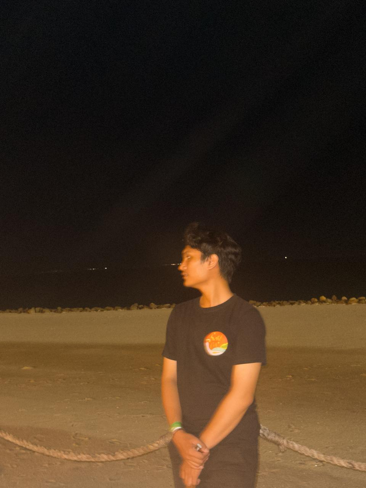

Halo, Saya
Jhoiwada Simanjuntak
Lulusan S1 Sistem Informasi Universitas Gunadarma (IPK 3.80/4.00). Mengembangkan aplikasi web responsif modern, integrasi backend berbasis data yang tangguh, serta implementasi algoritma Machine Learning seperti TF-IDF & Content-Based Filtering.

Jhoiwada Simanjuntak
Full-Stack & UI/UX DeveloperMembangun Solusi Digital dengan Presisi & Pendekatan Data
Mengkombinasikan kepekaan desain antarmuka pengguna (UI/UX) dengan arsitektur rekayasa perangkat lunak dan Machine Learning.
Profil Profesional
Saya adalah lulusan baru (Fresh Graduate) dari Fakultas Ilmu Komputer dan Teknologi Informasi, Jurusan Sistem Informasi di Universitas Gunadarma dengan predikat kelulusan yang sangat memuaskan (IPK 3.80 / 4.00).
Fokus keahlian saya berpusat pada perancangan antarmuka digital yang intuitif (UI/UX), pembangunan aplikasi web responsif berbasis data (PHP, Python, MySQL, JavaScript), serta penerapan algoritma Machine Learning seperti TF-IDF dan Content-Based Filtering untuk sistem pencocokan dan rekomendasi cerdas.
Sorotan Prestasi & Akademik
Universitas Gunadarma
S1 Sistem Informasi (Sept 2022 - Sekarang)Fokus riset tugas akhir: Sistem Rekomendasi Magang Berbasis AI (TF-IDF & Content-Based Filtering) untuk mencocokkan profil mahasiswa dengan kebutuhan industri.
Pendidikan & Pengalaman Organisasi
Kombinasi fondasi akademik ilmu komputer yang kuat dengan pengalaman kolaborasi kepemimpinan dan desain kreatif.
Pendidikan Formal
S1 Sistem Informasi (FTI)
- Mempertahankan prestasi akademik konsisten dengan Indeks Prestasi Kumulatif 3.80 dari skala 4.00.
- Riset & Pengembangan Skripsi: Sistem Rekomendasi Magang (MagangLink) mengimplementasikan pemrosesan teks TF-IDF dan Content-Based Filtering.
- Menyelesaikan 12 pelatihan & sertifikasi kompetensi resmi terverifikasi: Data Science Microsoft Fabric, Spec-Driven Development AWS Kiro, JavaScript, DBMS MySQL, Oracle PL/SQL, Business Intelligence, dan Jaringan Cisco.
Pengalaman Organisasi & Kreatif
Graphic Designer
- Bertanggung jawab penuh atas rancangan seluruh aset visual organisasi: banner acara, flyer promosi, dan feed Instagram resmi.
- Menjaga konsistensi panduan identitas visual (brand identity) dan estetika di seluruh platform publikasi media sosial.
- Berkolaborasi aktif dengan tim lintas divisi untuk menyelaraskan konsep acara ke dalam bentuk media visual yang komunikatif.
Creative & Media Team
- Merancang materi identitas visual acara: desain banner panggung, merchandise kaos peserta, dan konten media publikasi.
- Mengelola jalannya dokumentasi foto serta rekaman video secara menyeluruh sepanjang kegiatan berlangsung.
Showcase Portofolio Proyek
Koleksi proyek nyata yang mencakup pengembangan full-stack berbasis data, kecerdasan buatan (recommender system), dan desain prototipe UI/UX.
Sertifikasi & Lisensi Kompetensi
12 sertifikasi kompetensi resmi terverifikasi dari Universitas Gunadarma, Dicoding, Microsoft, dan AWS dalam bidang Data Science, Spec-Driven Development, pemrograman web, basis data, jaringan, dan penalaran logika.
Tech Stack & Perangkat Pengembangan
Kombinasi teknologi, framework, dan perkakas yang saya gunakan untuk mewujudkan solusi digital dari perancangan hingga deployment.
Backend & Core
Frontend & Web
UI/UX & Desain
Data Science & AI
Tools & Lingkungan Kerja
Mari Terhubung & Berdiskusi
Terbuka untuk peluang kerja full-time, magang industri, proyek freelance, atau diskusi seputar pengembangan web dan teknologi.